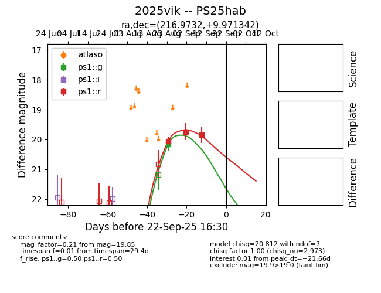
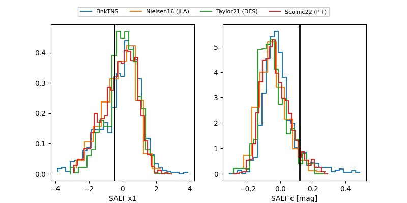

TNS: 2025vik
YSE: 2025vik
2025vik (yse,tns)
PS25hab (panstarrs)
equatorial (ra, dec) = (216.9732,+9.97134)
galactic (l, b) = (0.4870,+61.52316)


last ps1::g=20.15, ps1::r=19.85
1 ps1::g, 3 ps1::r detections